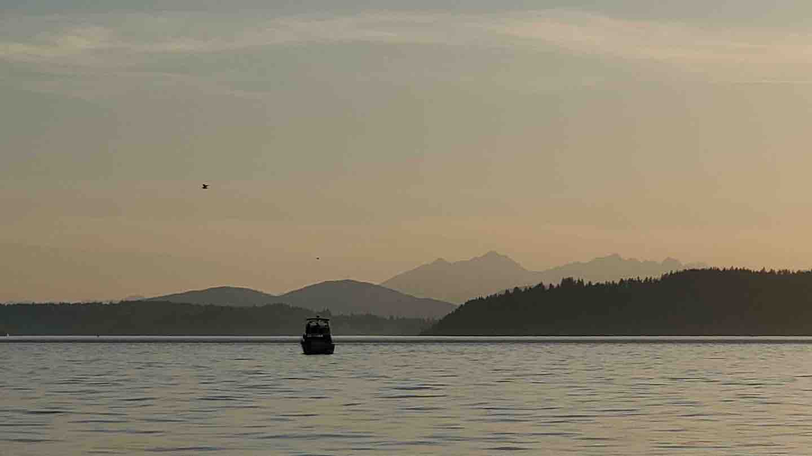
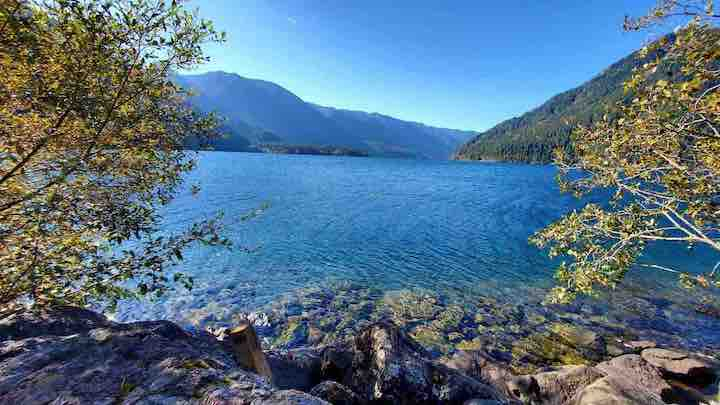
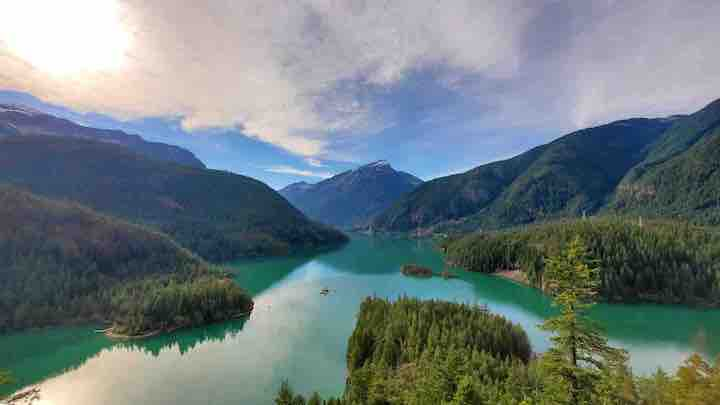
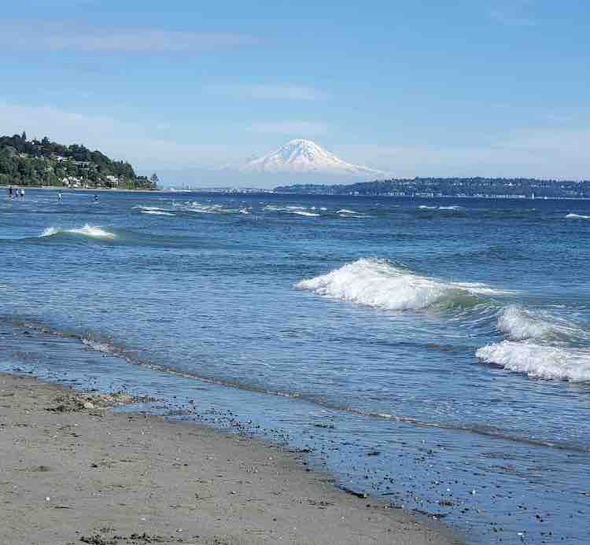
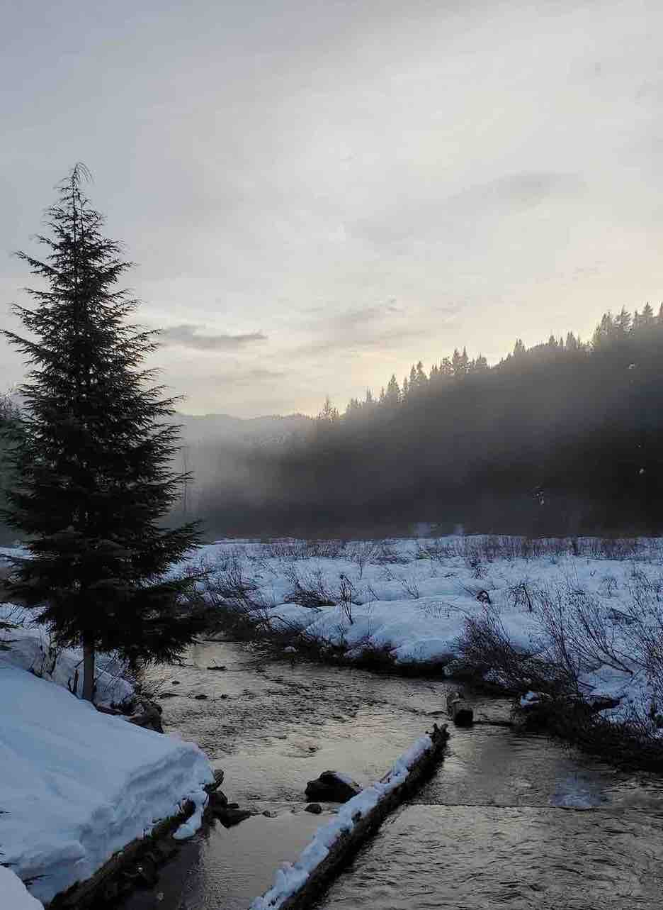
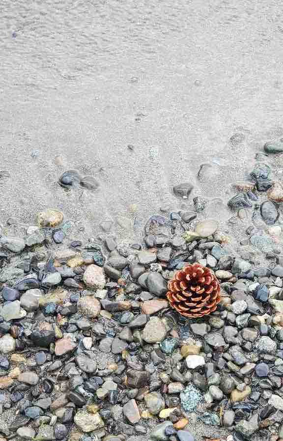
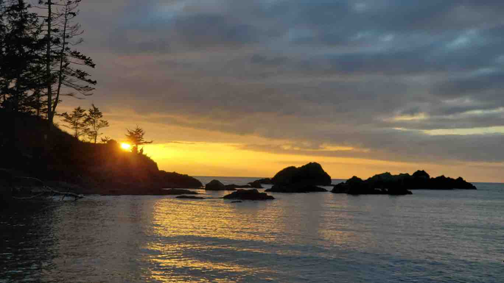
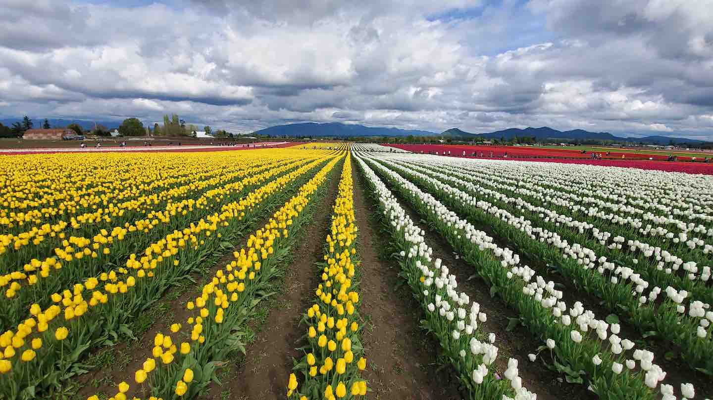
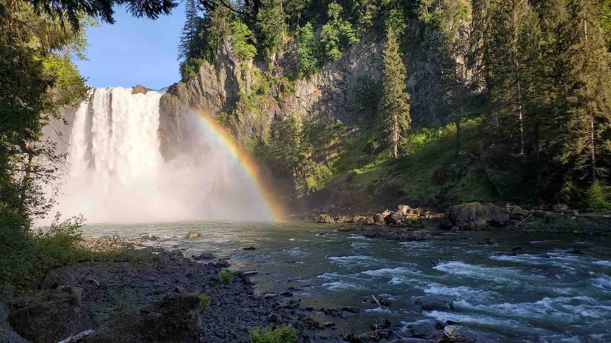
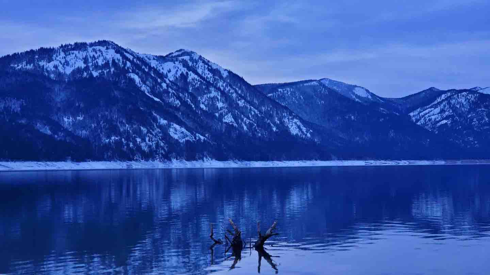

P.S. In my spare time, I enjoy going for long walks/hikes, taking photos and reading. I tried audiobooks but I still prefer reading, even while walking! Somehow, for me, books are meant to be read :) I do enjoy listening to a few podcasts though.
I moved to WA after finishing my PhD. It is one of the most diversely scenic places I have visited (so far). Check the list below for places you should visit while around Seattle!
I moved to WA after finishing my PhD. It is one of the most diversely scenic places I have visited (so far). Check the list below for places you should visit while around Seattle!

"Alki Beach"

"Cressent Lake @ Olympic NP"

"Diablo Lake @ North Cascades NP"

"Discovery Park"

"Gold Creek Pond Trail"
"Hurricane Ridge @ Olympic NP"

"Meydenbauer Bay Park"

"Rosario Beach"

"Skagit Valley"

"Snoqualmie Falls"

"Speelyi Beach"